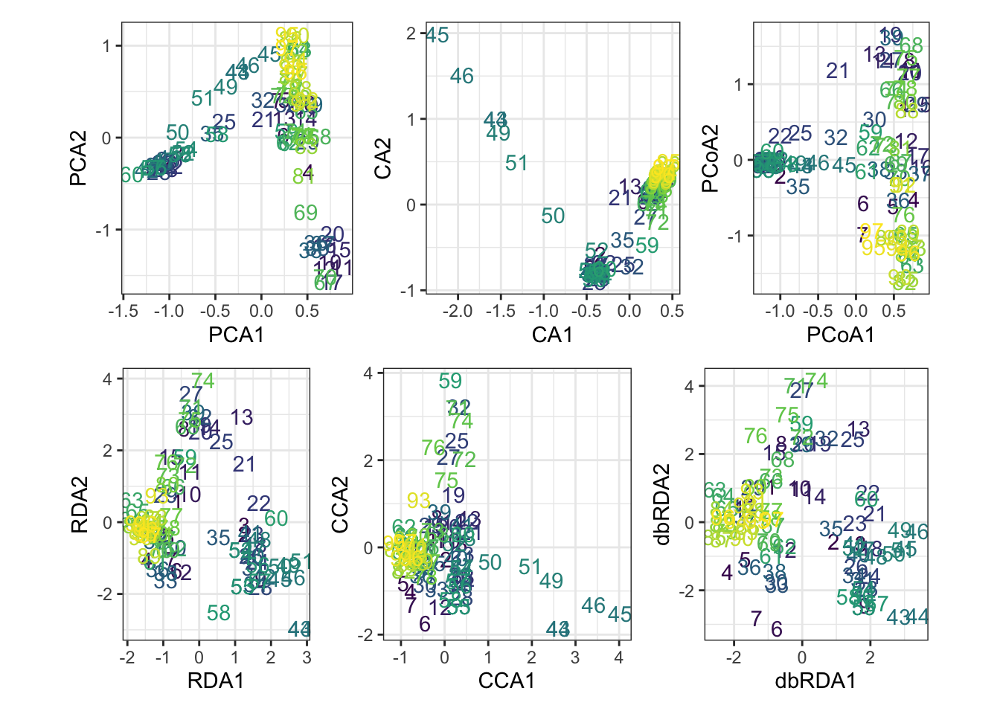
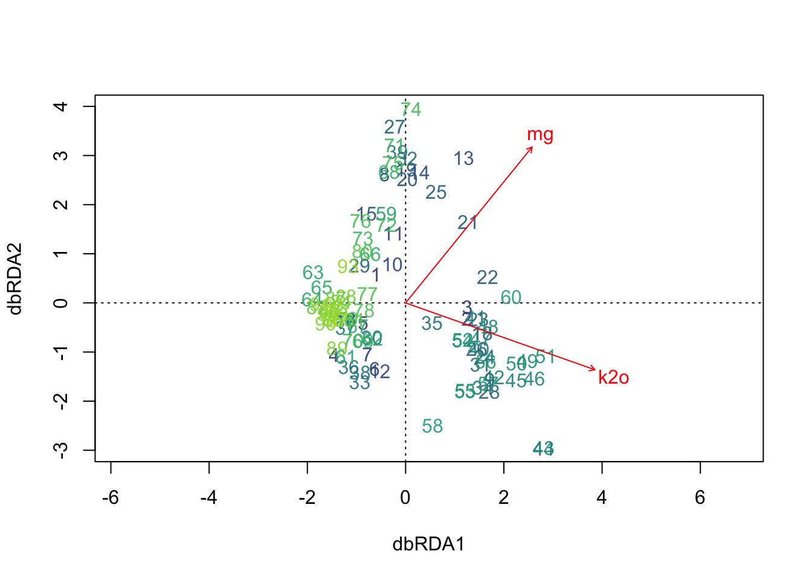
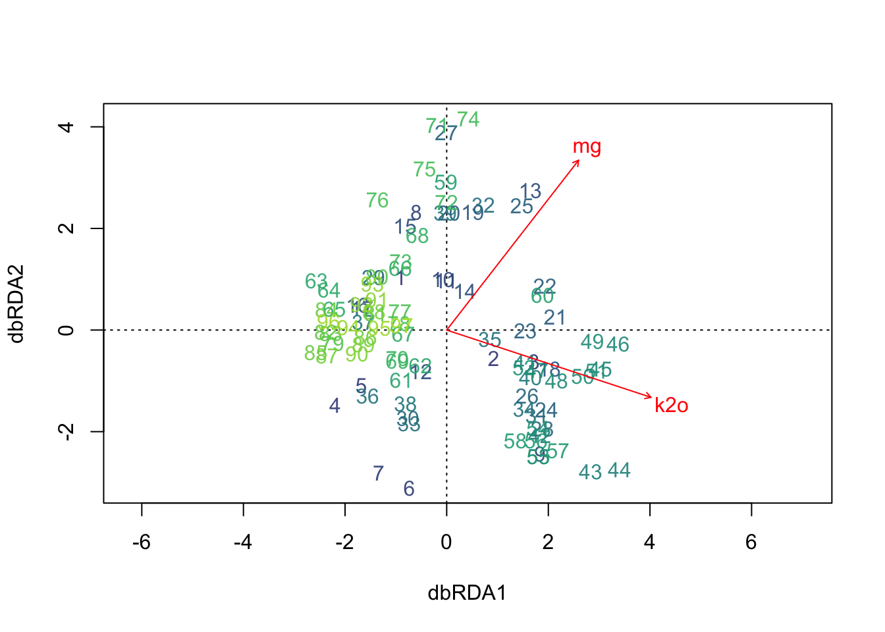
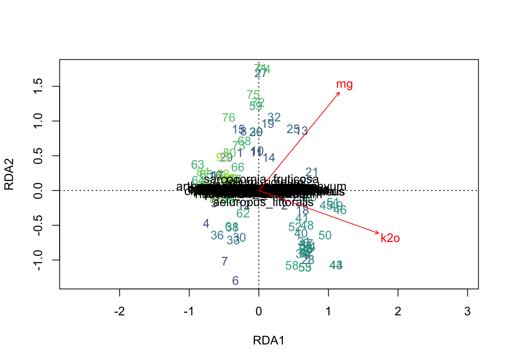

Chapter 9 Ordination (constrained)
How best to order sites by dissimilarities of community compositions, in response to measured environmental variables?
Constrained ordination addresses specific a priori hypotheses about variation in community compositions attributable to measured environmental gradients. It portrays only a fragment of all community variation, and is not used for exploratory analysis.
9.1 Constrained ordination overview
Important and common constrained ordination tools include redundancy analysis (RDA; constrained PCA), canonical correspondence analysis (CCA), distance-based RDA (dbRDA, McArdle and Anderson 2001), and fuzzy set ordination (FSO, Roberts 2008). dbRDA and FSO both let the user select their own dissimilarity measure. Other methods (redundancy analysis or constrained correspondence analysis) force an implicit dissimilarity measure and make linearity/distributional assumptions. The table below shows connections/analogs between unconstrained and constrained ordination methods.
| Method | Unconstrained | Constrained |
|---|---|---|
| Linear / Euclidean | PCA | RDA |
| Unimodal / Chi-square | CA | CCA |
| Distance-based | PCoA | dbRDA |
9.2 dbRDA – the community analysis Swiss army knife
The dbRDA method, implemented in vegan with the dbrda function, is very versatile and can yield all of the ordination analyses we’ve been discussing based on how it is parameterized and the distance matrix used.
However, using the dbrda function may limit the use of some useful plotting functions, as we’ll see when we make tri-plots below.
## Define multiple different dissimilarity matrices
D_euc <- vegdist(spe, 'euc') # Euclidean
D_chi <- vegdist(spe, 'chi') # Chi-sq
D_bc <- vegdist(spe, 'bray') # Bray-Curtis (Sorensen)
### PCA: PCO based on Euclidean distances (see `stats::prcomp`)
pca <- dbrda(D_euc ~ 1)
### CA/RA (correspondence analysis): PCO based on Chi-sq distances (see `vegan::cca`)
ca <- dbrda(D_chi ~ 1)
### PCoA: generalizes to any dissimilarity (see `labdsv::pco`)
pco <- dbrda(D_bc ~ 1)
### RDA: constrained form of PCA (see `vegan::rda`)
rda <- dbrda(D_euc ~ k2o + mg, data = env)
### CCA: constrained form of CA (see `vegan::cca`)
cca <- dbrda(D_chi ~ k2o + mg, data = env)
### dbRDA: constrained form of PCO; `lingoes` makes so can handle neg eigenvalues
dbr <- dbrda(D_bc ~ k2o + mg, data = env, add = 'lingoes')Visualize all of the methods together.
library(patchwork)
u <- 1:NROW(spe)
plot_ord <- function(ord, xlab, ylab) {
sc <- as.data.frame(vegan::scores(ord, display = "sites"))
names(sc)[1:2] <- c("Axis1", "Axis2")
sc$id <- seq_len(nrow(sc))
ggplot(sc, aes(Axis1, Axis2)) +
geom_text(aes(label = id, color = id)) +
scale_color_viridis_c() +
coord_equal() +
labs(x = xlab, y = ylab) +
theme_bw() +
theme(
legend.position = "none"
)
}
p1 <- plot_ord(pca, "PCA1", "PCA2")
p2 <- plot_ord(ca, "CA1", "CA2")
p3 <- plot_ord(pco, "PCoA1", "PCoA2")
p4 <- plot_ord(rda, "RDA1", "RDA2")
p5 <- plot_ord(cca, "CCA1", "CCA2")
p6 <- plot_ord(dbr, "dbRDA1", "dbRDA2")
(p1 | p2 | p3) /
(p4 | p5 | p6)
What do we see here?
The dominant ecological gradient is sufficiently strong that it is recovered regardless of ordination method. Unconstrained methods (PCA, CA, PCoA) and constrained methods (RDA, CCA, dbRDA) all reveal a similar separation of sites, indicating that the major pattern in community composition is robust and is strongly associated with the environmental variables included in the constrained analyses.
9.3 Visualizing site X environment relationships with RDA and dbRDA
# color vector for plotting
u <- get_palette()
u <- u[1:nrow(spe)]
plot(rda, type = "n", scaling = 2)
# site coordinates
site_scores <- vegan::scores(rda, display = "sites", scaling = 2)
# site labels with color gradient
text(site_scores,
labels = rownames(site_scores),
col = u)
# environmental vectors
text(rda,
display = "bp",
col = "red",
scaling = 2)
plot(dbr, type = "n", scaling = 2)
# site coordinates
site_scores <- vegan::scores(dbr, display = "sites", scaling = 2)
# site labels with color gradient
text(site_scores,
labels = rownames(site_scores),
col = u)
# environmental vectors
text(dbr,
display = "bp",
col = "red",
scaling = 2)
What do we see?
The RDA and dbRDA ordinations produce very similar site configurations, indicating that the constrained community pattern associated with mg and k2o is robust to the ordination approach. In both analyses, mg is associated with sites positioned high on the second axis, whereas k2o is associated with sites positioned toward the lower-right portion of the ordination, suggesting that these variables represent distinct environmental gradients related to community composition.
9.3.1 Tri-plots - site, species, and environmental together
Let’s add the species scores to the RDA plots.
rda_mod <- rda(decostand(spe, "hellinger") ~ k2o + mg, data = env)
#rda_mod <- rda(spe ~ k2o + mg, data = env)
## Scaling = 2
plot(rda_mod, type = "n", scaling = 2)
# site scores
site_scores <- vegan::scores(rda_mod,
display = "sites",
scaling = 2)
# colored site labels
text(site_scores,
labels = rownames(spe),
col = u)
# species labels
text(rda_mod,
display = "species",
col = "black",
scaling = 2)
# environmental vectors
text(rda_mod,
display = "bp",
col = "red",
scaling = 2)
What do we see?
The environment X site relations are the same as what we saw above. With respect to the species, we see many species cluster around the origin, meaning they are not strongly associated with the first two constrained axes. Being specific, Sarcocornia fruticosa appears to be positively associated with the environmental gradient represented by Mg and tends to occur in sites with relatively high Mg values. Aeluropus littoralis is the only other species that clearly stands out in the ordination and appears associated with the opposite end of the Mg-related gradient from S. fruticosa.